Sannoe
Sannoe · Aomori
Sannoe
Highlighted on the Aomori map.
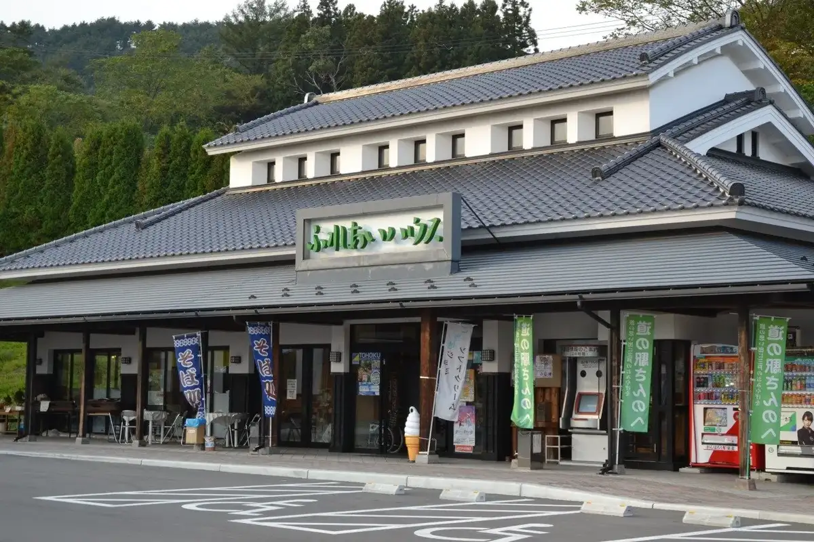
Stay
No bookable places to stay found in Sannoe — nearest options in Nanbucho.
Dining
正寿司
Masatoshi Tsukasa
松宗菓子店
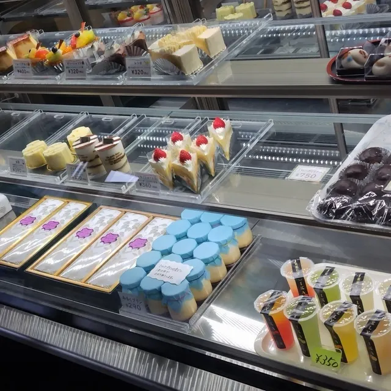
Matsu Shuu Kashi Mise
中平せんべい店
Chuuhei Senbei Mise
麺工房 てんや 三戸店
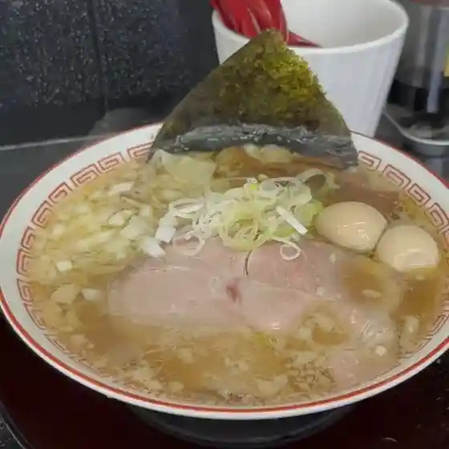
Men Koubou Tenya Sannohe Mise
元気亭
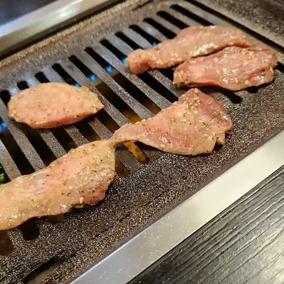
Genki Tei
安ヶ平せんべい店
An Ke Hiratase Nbei Mise
前田せんべい店
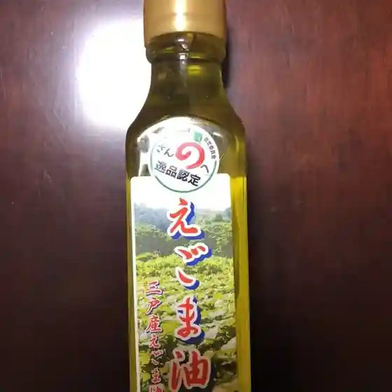
Maeda Senbei Mise
照井鮮魚店
Terui Sengyoten
住谷野
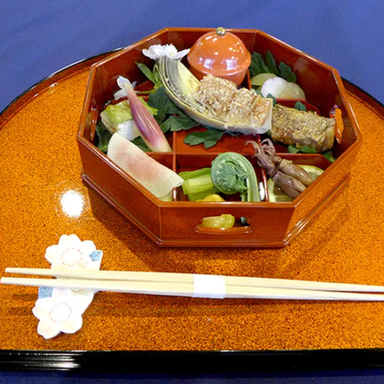
Sumiya No
ふぁみりぃ.Cafe.すてっぷ
Famirii . Cafe . Suteppu
まちの楽校
Machino Raku Kou
松風堂
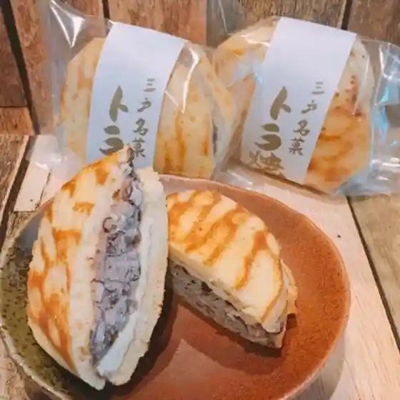
Matsukaze Dou
寿し勝
Hisashi Shi Kachi
松原煎餅店
Matsubara Senbei Mise
下村菓子店
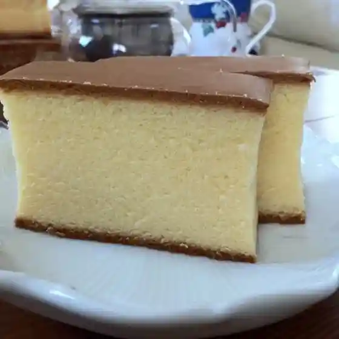
Shimomura Kashi Mise
プロムナード
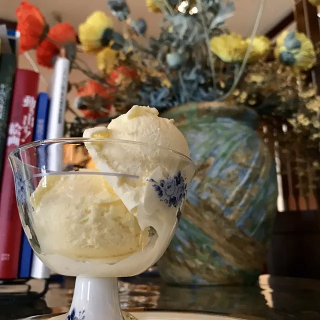
Puromunaado
マックスバリュ 三戸店
Makkusubaryu Sannohe Mise
立花牛乳店
Tachibana Gyuunyuu Mise
ふじ村
Fuji Mura
馬酔木
Ashibi
南部庵
Nanbu Iori
SAN・SUN産直ひろば
San Sun Sanchoku Hiroba
尾下せんべい
O Kudase Nbei
Sights
Sannohe Roadside Station
Sannohe Roadside Station sells local sake, souvenirs, and fresh produce from Sannohe Town.
Sannohe Castle Ruins (Shiroyama Park)
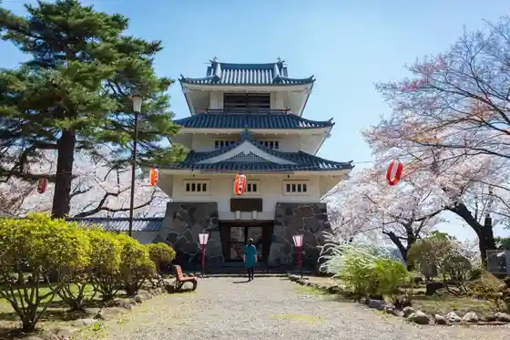
National historic site of the Nanbu clan's Sengoku-era castle, now one of Japan's 100 best historic parks.
Sannohe Spring Festival
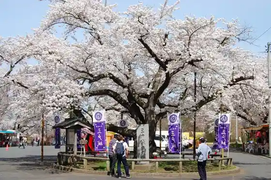
Cherry blossom festival in Shiroyama Park on the Sannohe Castle ruins.
Apple Dome Honobonokan
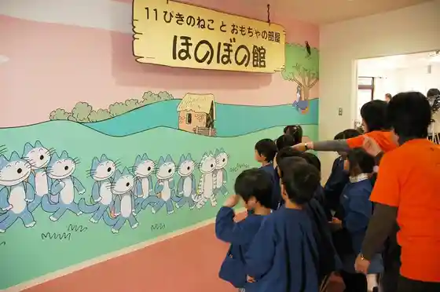
Memorial museum of Sannohe-born picture-book artist Baba Noboru, creator of "11 Cats".
Sannohe Daijingu Shrine
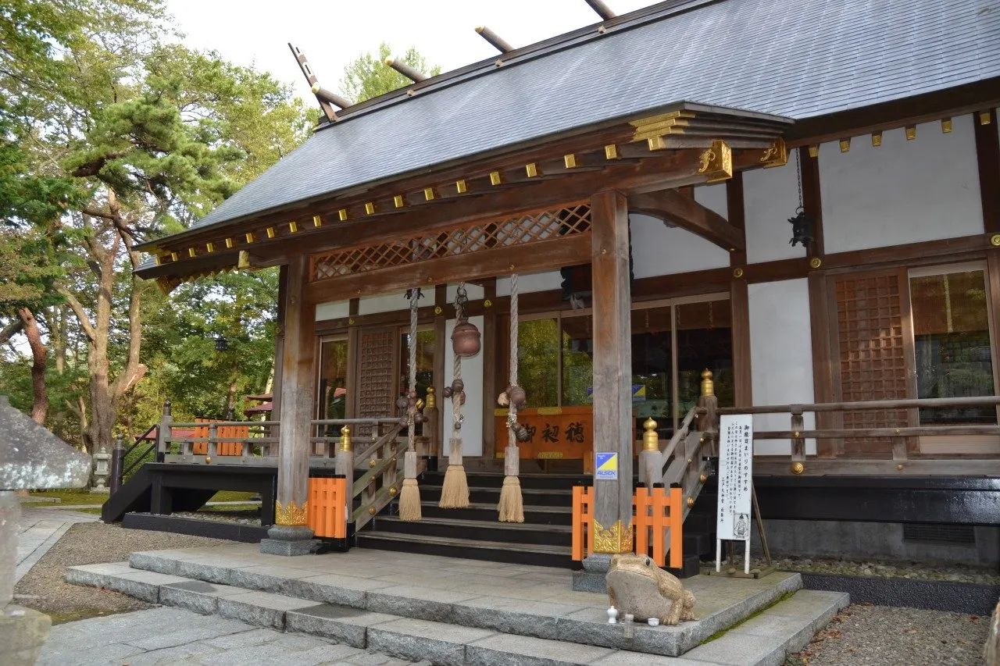
Shrine to Amaterasu known locally as "Shinmei-sama" or "the Ise of Tohoku".
Town of the 11 Cats
Statues, banners and mailboxes featuring Baba Noboru's "11 Cats" characters around town.
Sannohe History and Folklore Museum (Sannohe-jo Onkokan)
Museum opened in 1976 in Shiroyama Park with Nanbu clan materials and Jomon-to-ancient artifacts.
Sannohe Park Golf Course
Park golf course on Route 4 next to Roadside Station Sannohe.
SAN-SUN Farmers' Market
Farm market run by local farm women, with a diner serving kushi-mochi and hittsumi.
Sannohe Bokyo Bridge
400 m extradosed bridge with one of the world's longest spans of its type.